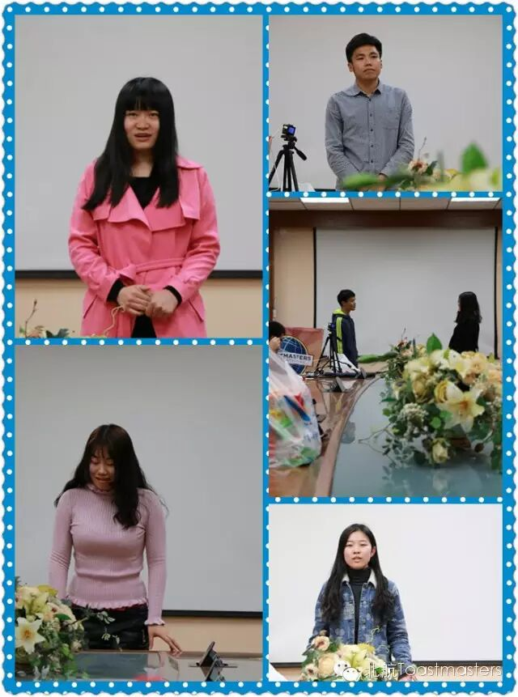
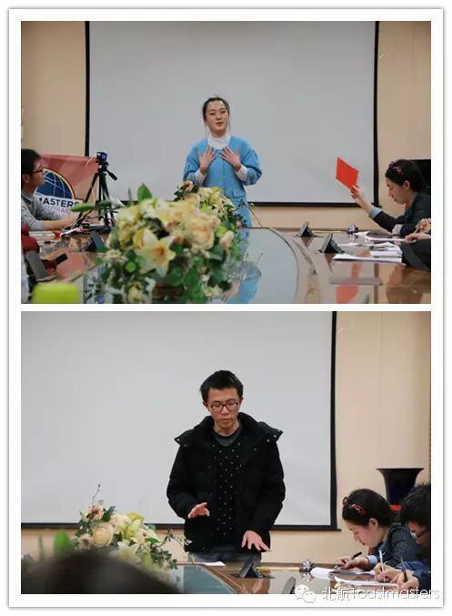
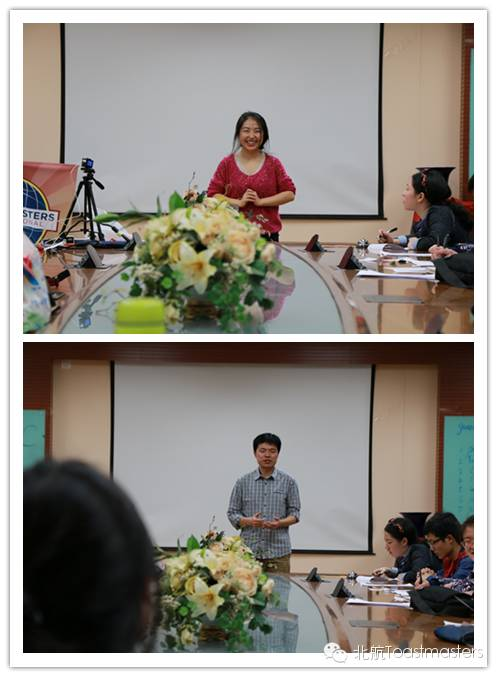
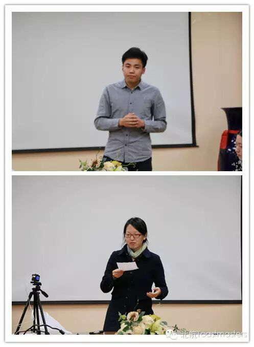
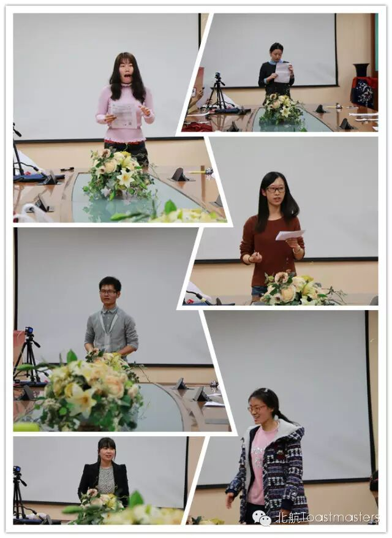
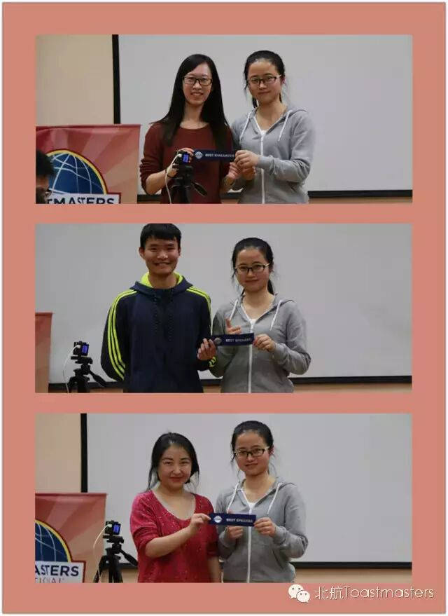
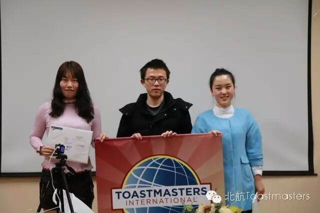
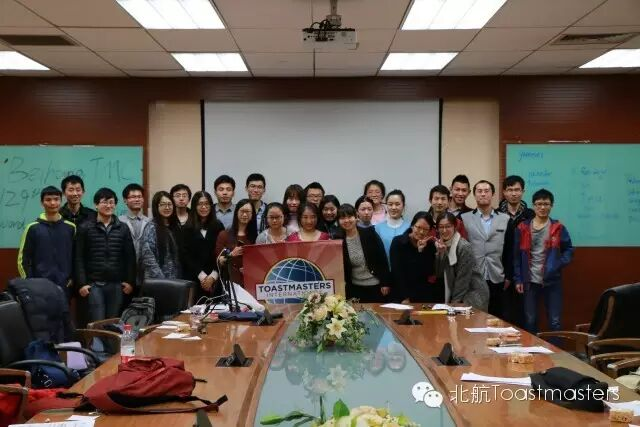

Hello,艾瑞宝迪！
怎么过的辣么快，又到会议回顾了
上周的精彩瞬间有哪些？
Table Topic Session

Tea：如果我是饿了么的
CEO，我会确保食品安全
对得起顾客的信任
Han：网络支付会代替钱币
网络支付的时候没那么心疼
Gastby：我喜欢你很多年了
只是因为害羞而没表白
Phoebe：现在我要出国了
你那么聪明
我想距离不是问题
Yolanda：如果我是个男人
我会把所有的钱都给未婚妻
没钱的话，我会拼命挣钱
给她幸福生活
Prepared Speech Session

Amy（CC1）：我物理很好
但觉得书本上的知识
不能解决实际问题；实验做的不好
也不好放弃，因为相信“永不言弃”
世界很大，想去看看

Elena（CC2）：想写作，女朋友说
这样写没法出版
老板说，女性成功要靠嫁得好
我们一直被人定义
我想说，我们是不可定义的
未来不可限量

Han（CC4）：sports教给我的
永不言弃
注意细节
平衡生活
主持及评论环节

THE BEST

新会员入会

The end：We are 伐木累
